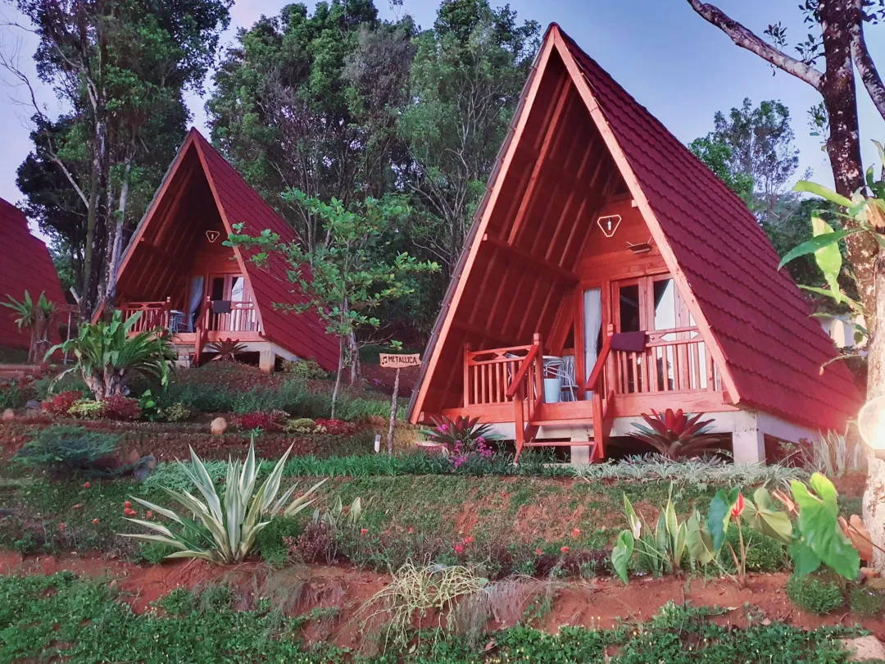
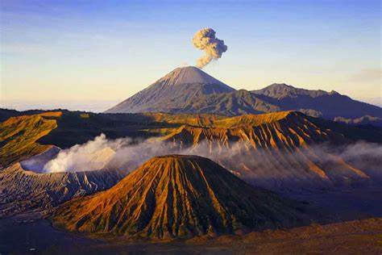

Destinasi Populer

Destinasi 1
Bagi masyarakat Yogyakarta dan sekitarnya, Pantai Parangtritis termasuk destinasi wisata favorit dikarenakan keindahan pantainya.

Destinasi 2
Gunung adalah bagian kerak bumi yang lebih tinggi dari area di sekitarnya. Gunung biasanya memiliki sisi curam yang secara signifikan menyingkap batuan dasarnya. Gunung berbeda dari dataran tinggi karena memiliki daerah puncak yang terbatas, gunung lebih besar dari sebuah bukit, biasanya memiliki ketinggian setidaknya 300 meter (1.000 kaki) di atas tanah sekitarnya.

Destinasi 3
unga sakura adalah bunga kecil berwarna merah muda lembut yang dihasilkan oleh pohon sakura. Mekar musim semi adalah tontonan yang mewah tetapi sangat singkat.